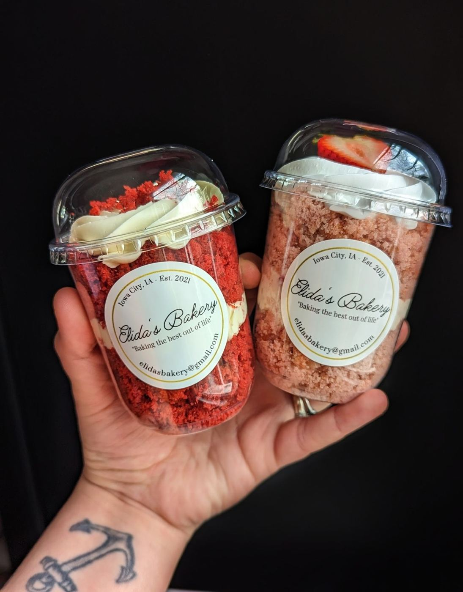

Meet Elida’s

A small Iowa City bakery known for custom cakes that look gorgeous and taste fresh. Customers say the staff is friendly and patient, and goes above and beyond.

A small Iowa City bakery known for custom cakes that look gorgeous and taste fresh. Customers say the staff is friendly and patient, and goes above and beyond.